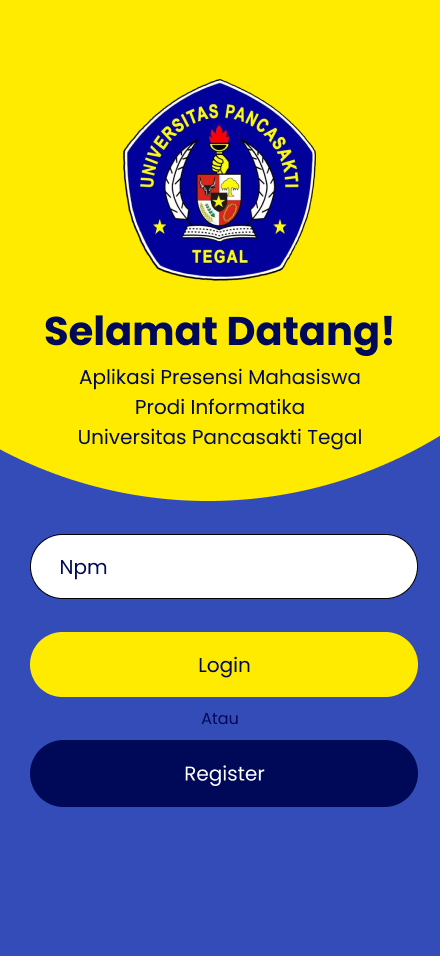
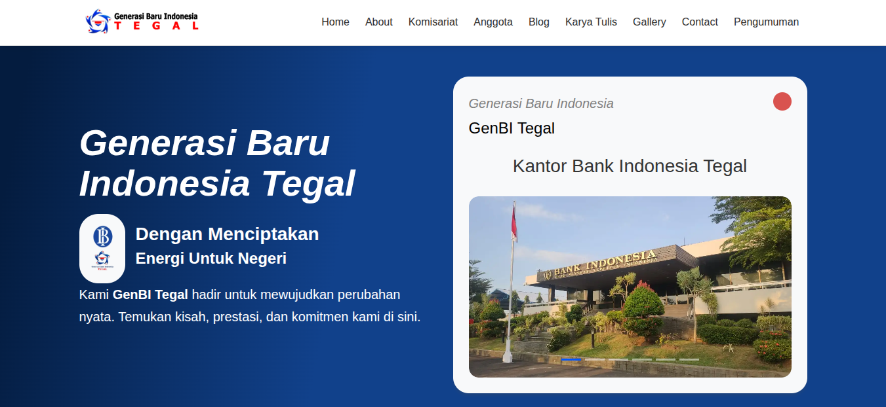

Hi, I'm Liana
Liana, Lulusan S1 Informatika dengan ketertarikan pada bidang UI/UX Designer pemula dengan kemampuan dalam pembuatan Wireframe, Prototipe dan desain antar muka menggunakan Figma.

About me


hi aku liana,
Memiliki pengalaman dalam mengembangkan sistem presensi mahasiswa menggunakan teknologi face recognition dan Internet of Things (IoT). Saya juga aktif dalam organisasi kampus sebagai Komandan/ Ketua Umum KSR PMI Unit Universitas Pancasakti Tegal, Sekretaris Himpunan Mahasiswa Informatika, dan Staf Ahli Website GenBI, yang membentuk kemampuan komunikasi, kepemimpinan, kerja tim, serta problem solving. Saya terbiasa mengembangkan solusi digital yang fungsional dan mudah digunakan serta terus meningkatkan kemampuan di bidang desain dan teknologi.
Skill
Education
Universitas Pancasakti Tegal
S1 Informatika
2021-2025
Saya adalah lulusan S1 Informatika dari Universitas Pancasakti Tegal dengan IPK 3,76. Selama kuliah, saya mempelajari berbagai aspek teknologi informasi termasuk sistem digital, presensi berbasis IoT, dan user interface dasar. Pengalaman akademis ini memberikan foundation yang kuat dalam memahami bagaimana teknologi dapat digunakan untuk menciptakan solusi yang user-friendly.
SMK N 2 Adiwerna
Desain Interior & Teknik Furnitur
2018-2021
Background desain ini sangat membantu dalam mengembangkan sense of aesthetics dan pemahaman tentang tata letak, proporsi, dan visual hierarchy yang menjadi fundamental dalam UI/UX design.
Organization
-
Komandan/ Ketua Umum
KSR PMI UNIT UPS TEGAL
-
Sekretaris
Himpunan Mahasiswa Tegal
-
Staff Ahli Website
Koordinator Genbi Tegal
My Project

